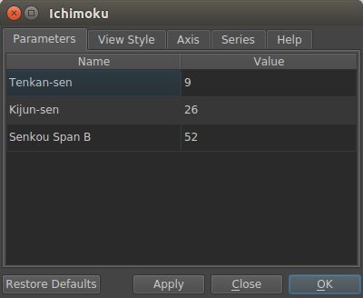
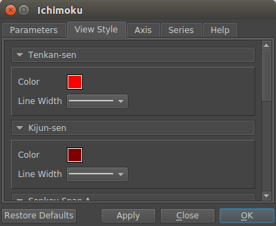
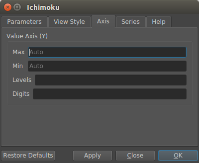
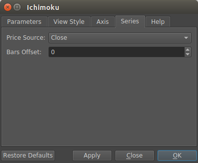
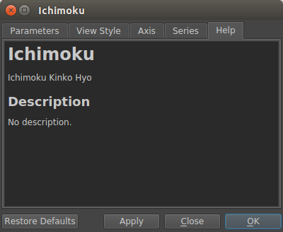

Study Attributes window¶
Many of the studies use a similar looking properties/attributes window that window is described here. Some studies provide their own properties window such as the Volume by Price indicator, and some studies don’t have any editable attributes.
The terms Study Attributes and Study Properties may be used interchangeably.
Parameters tab¶
The parameters tab contains optional input parameters that affect the indicators calculation. Most of the time the input is an integer (whole number). Sometimes the input is a number that represents a mode or function an indicator should use internally, for example, the Stochastic Oscillator allows defining the moving-average type used internally, 0 (zero) represents SMA, 1 (one) represents EMA. The tool-tip will show valid options.
View Style tab¶
The view style tab contains options that affect the color and width of lines displayed by an indicator. There is one color option for each of the indicators outputs. The color and line width may be ignored by the indicator.
Axis tab¶
The axis tab contains display options for indicators that appear in their own sub-plot (i.e not overlays).
- Min and Max
- If set the Max value is used as the largest value on the y-axis, Min is used for the smallest value on the y-axis. If both Min and Max are empty autoscaling is used.
- Levels
- Input a separated list of numbers. For each number, a horizontal line is drawing across the chart. For example, if you want to show lines at 30, 70 on an RSI indicator input “30 70”.
- Digits
- The digits attribute controls the number of decimal places displayed on the y-axis, use -1 (negative one) to switch on number abbreviations (e.g 1000000 is shown as 1M).
Series tab¶
- Price source
- Select the input price source for the indicator. This only affects indicators that use a single input series (i.e not a candle). This value can also be ignored by some indicators that are always calculated with a certain price type (e.g Awesome Oscillator always uses Median).
- Bars Offset
- Input type is a number of bars. Shift the studies’ outputs forward or backwards by the number of bars. Use a negative number to shift backwards. Some indicators use an internal offset (e.g Ichimoku), the internal offset and the bars offset you specify here are added together for the final offset.
Help tab¶
Displays text provided by the indicator, if the indicator doesn’t provide any help text the tab may be hidden.